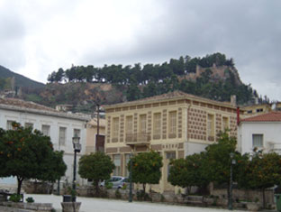

Κοινωνία
 Η ¶μφισσα, πρωτεύουσα του νομού Φωκίδας, με πληθυσμό 12.000 κατοίκους, αποτελεί το διοικητικό και οικονομικό κέντρο της περιοχής. Είναι χτισμένη ανάμεσα σε Παρνασσό και Γκιώνα, στην ίδια θέση από την αρχαιότητα. Στο Δήμο ¶μφισσας περιλαμβάνονται, εκτός από την πόλη, οι κοινότητες ¶γιος Γεώργιος, ¶γιος Κωνσταντίνος, Σερνικάκι, Ελαιώνας, Δροσοχώρι, Προσήλιο και Αγία Ευθυμία. Η σχετική απομόνωση της περιοχής στην ιστορική της διαδρομή συνέβαλε στο να διατηρήσει η πόλη την τοπική λαϊκή της αρχιτεκτονική. | ||